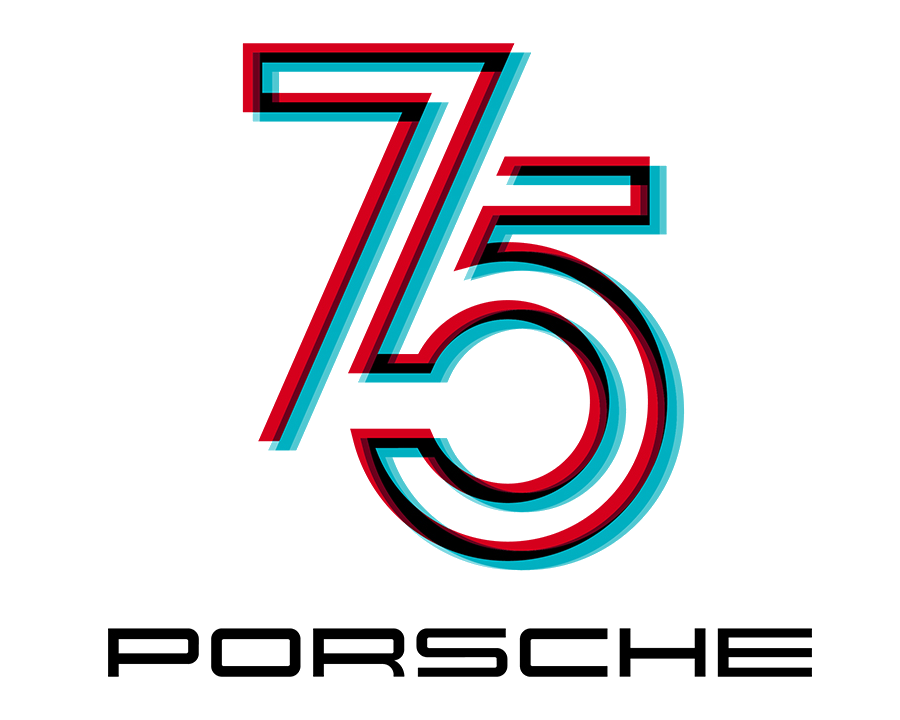

Move through the galleries

Walk through a cinematic museum of engineering, racing, and the sports cars that changed Porsche.
Preparing 13 exhibits…
Your device does not support the 3D gallery. Explore the collection below.